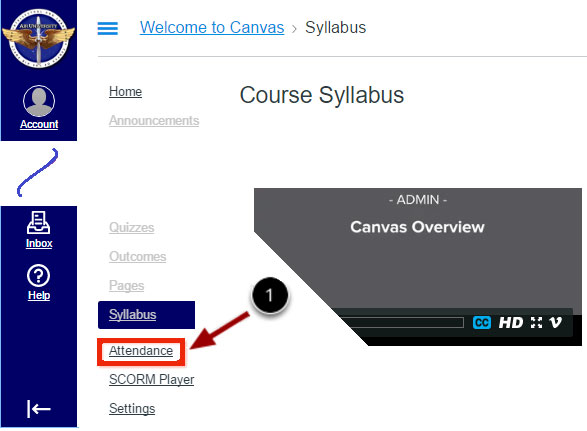

Canvas Guides

Additional Guides

The AU LMS Guides are licensed under a Creative Commons Attribution-NonCommercial-ShareAlike 4.0 International License. They include content from the Canvas Guides.
The AU LMS Guides are licensed under a Creative Commons Attribution-NonCommercial-ShareAlike 4.0 International License. They include content from the Canvas Guides.
The Attendance application allows instructors to track which students attend class. Air University uses an Attendance application that is different from the Roll Call application described in Instructure’s Canvas Guides.
This guide answers the following questions:
To take attendance click on the Attendance link in the side menu to bring up the Attendance App.
By default, the attendance tool opens to today's date.
If needed, move to a different date by clicking the left and right arrows next to the date or by clicking on the date [1] . Click on the date and a popup calendar displays to aid in date selection.
To mark attendance, click on the applicable attendance status icon [2] to mark a student as present, late, or absent.
For a given date, attendance for all students on that date can be marked as present by clicking on the MARK ALL PRESENT button [3]. To deselect all as present click the UNMARK ALL button [4].
To see attendance for previous dates click on the date and navigate to the desired date in the date picker. The attendance tool will display attendance for the selected date.
Click on the EXPORT [1] button to open a popup providing options for EXPORT ALL [2] or EXPORT DATE RANGE [3].
Click on EXPORT ALL [2] to produce a spreadsheet compatible CSV format file of all enrolled students with their attendance status throught the current or final course date.
To create a report of student attendance for a range of dates:
Click on the Start Date and End Date calendar popup buttons [4] and select the report start and end dates.
Click on EXPORT DATE RANGE [3].
This will produces a spreadsheet compatible CSV format file [5] of all the students and their attendance status for the selected date range. Dates for which attendance data was later removed or for which UNMARK ALL was selected shows a date with attendance of n/a.
Back to top of AttendanceAU uses BigBlueButton to support web conferencing inside of Canvas. AU's Canvas integration with BigBlueButton is very similar to the one available in Instructure's Canvas cloud.
Differences include:
For more information on BigBlueButton, see Instructure's Canvas Guides for Conferences.
AU LMS uses Wordpress to support blogging. The full integration is not yet complete in AU’s Sandbox instance of Canvas.
SCORM support in AU Canvas is implemented by integrating the RUSTICI SCORM Engine. This is similar but not the same as Instructure’s implementation.
SCORM is a set of technical standards to ensure that learning content produced for Air University is compatible with the Canvas LMS. The term is also used to describe packages of content that conform to those standards. A SCORM package is a single file containing all of the content and logic for delivering a learning module. SCORM packages can contain content sequences and interactive pages. SCORM packages can be used as graded items that report a score into the gradebook.
This guide answers the following questions:
You create a SCORM package by using a third party authoring tool such as SoftChalk, Adobe Captivate, or Articulate Storyline, to create and save your course content as a SCORM zip file.
NOTE: The Air University SCORM application is slightly different from Instructure’s Canvas cloud application described in the Canvas Guides.
Click on SCORM Player [1], then click on Upload [2].

After clicking Upload, select and upload the SCORM file by clicking on the file [3].
The package will appear in SCORM with options to launch [1], preview [2], or delete [3] the assignment package.
Click preview [2] to view the SCORM content as a student will see the assignment.
When you complete the assignment in the preview mode, Canvas updates the score to display how the score appears to students. All package uploads default to 100 points. To reset the test content, click the Reset button. When you are finished with the preview, click the Done button.
To delete a SCORM file, click the trash can icon.
NOTE: If you delete a SCORM assignment from the Assignments, Discussions, or Quizzes pages, the assignment will still appear on the SCORM page, and if you try to open the assignment, Canvas will generate an error. However, if you delete the assignment from the SCORM page, the assignment will also be deleted from all other applicable Canvas locations.
A collaboration is a shared document that multiple people can simultaneously view and edit. Canvas supports collaborations using multiple tools including Etherpad, Google Docs, and Office 365. Collaborations that use Google Docs or Office 365 require all participants to have accounts on those systems. For that reason, Etherpad is recommended as the primary tool for Canvas collaborations.
For information on creating collaborations using Google Docs and Office 365, see the Canvas Collaboration guides provided by Instructure. Etherpad-based collaborations are very similar. This documentation describes aspects unique to Etherpad.
Air University uses VeriCite to perform plagiarism checking. For more information, see: